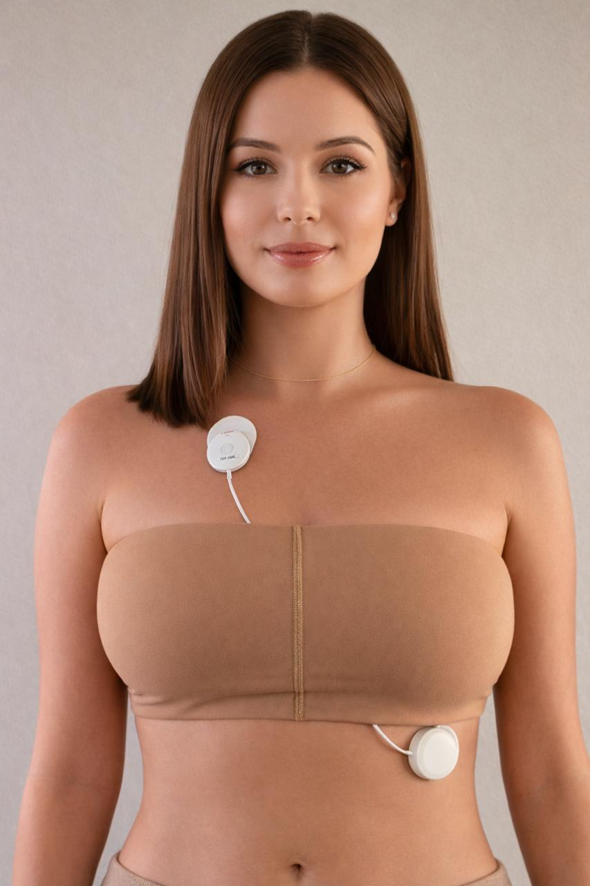

Long-Term Holter Monitoring
Long-Term Holter Monitoring
Long-Term Holter monitoring extends continuous ambulatory ECG recording beyond the traditional 24- to 48-hour window. Specialized Medical maintains LIVE test-status visibility throughout the study, including battery level, electrode contact / signal quality, device communication, and whether the patient appears connected. If a parameter falls outside the expected range, Specialized Medical contacts the patient and works with the patient to correct the issue. Clinical results are presented after the final report is generated.
Why Extend the Holter Recording Period?
Intermittent symptoms may not occur during a short 24- or 48-hour study. A longer recording window can give the physician more ECG information and a greater opportunity to correlate symptoms with rhythm findings. The ordering provider determines whether a longer Holter study, an event monitor, or MCT is most appropriate.
“Long-term” and “extended” Holter refer to the same idea: continuous ambulatory ECG recording carried out over a longer prescribed window, commonly 3 to 14 days.
Full-Disclosure ECG Recording
Full-disclosure reporting refers to the availability of the recorded ECG data for analysis across the prescribed study, subject to device operation, electrode contact, data quality, and patient adherence. Not every second is clinically interpretable if artifact or signal loss is present.

- Study startEnrollment and hookup
- Multi-day recordingContinuous ECG with LIVE test-status visibility
- Symptom entriesPatient documents symptoms as instructed
- Return / reconnectDevice returned per the selected workflow
- Data processingRecording analyzed after study completion
- Final reportGenerated and delivered for physician review
Physician Notification Timing
Notification timing
Specialized Medical maintains LIVE test-status visibility throughout a Long-Term Holter study so battery level, electrode contact / signal quality, device communication, and patient connection can be monitored and corrected when needed. Clinical results are presented after the final report is generated.
This service is not real-time clinical monitoring, continuous human observation, or immediate emergency notification.
Patient Experience During a Multi-Day Study
Longer studies create additional adherence challenges, so instructions are practical and specific: skin preparation, electrode rotation when instructed, adhesive sensitivity options, charging or battery procedures if applicable, symptom documentation, bathing restrictions, and support contact information.
Electrode placement and rotation
Follow the electrode placement and rotation instructions provided for the specific monitor. If adhesive causes significant irritation, contact the practice or support team before continuing use.
- Site preparationPrepare skin for reliable electrode contact
- PlacementFollow prescribed electrode sites for the monitor
- RotationChange adhesive locations only when instructed
- Loose electrode: follow the replacement instructions provided with the study or contact support
- Temporary signal loss: the system is designed to resume recording; contact support if the device indicates a problem
- Skin irritation: contact the practice or support team for guidance; sensitive-skin options may be available
- Uncertainty about device status: contact the support number supplied with the study
Emergency symptoms
Patients with chest pain, severe shortness of breath, fainting, stroke symptoms, or other urgent symptoms should follow their physician’s instructions and seek emergency assistance — call 911 — rather than waiting for a monitoring call.
Long-Term Holter Compared With MCT
Long-Term Holter and MCT both provide LIVE operational visibility while the study is in progress. Long-Term Holter provides an extended recording window with clinical results presented after the final report. MCT presents qualifying clinical findings during the study according to the prescribed notification protocol. Neither modality is universally superior — the ordering physician selects based on the clinical question. Compare Mobile Cardiac Telemetry (MCT) and Holter Monitoring.
Specialized Medical LIVE STREAMING configurations provide LIVE test-status visibility while the study is in progress. Specialized Medical can see operational information such as battery level, electrode contact and signal quality, whether the monitor is communicating, and whether the patient appears to remain properly connected. When a parameter falls outside the expected range, Specialized Medical contacts the patient and works with the patient to correct the issue so the study has the best opportunity to be completed successfully. For Holter and Extended / Long-Term Holter LIVE STREAMING studies, clinical results are presented after the final report is generated. For Event Monitoring and Mobile Cardiac Telemetry (MCT), qualifying clinical findings are presented while the test is in progress according to the prescribed notification protocol. Traditional NOT LIVE STREAMING Holter configurations do not provide LIVE test-status visibility during the study.
| Monitoring Type | Typical Duration | LIVE Test-Status Visibility | Clinical Findings Presented |
|---|---|---|---|
| Holter Monitoring (LIVE STREAMING) | 24–48 hours | Yes | After Final Report Is Generated |
| Extended / Long-Term Holter (LIVE STREAMING) | 3–14 days | Yes | After Final Report Is Generated |
| Cardiac Event Monitoring (LIVE STREAMING) | Up to 30 days | Yes | During Test — According to Prescribed Notification Protocol |
| Mobile Cardiac Telemetry (MCT) (LIVE STREAMING) | Up to 30 days | Yes | During Test — According to Prescribed Notification Protocol |
| Holter Monitoring (NOT LIVE STREAMING VERSION) | 24–48 hours | NO | After Final Report Is Generated |
| Extended Holter (NOT LIVE STREAMING VERSION) | 3–7 days | NO | After Final Report Is Generated |
Frequently Asked Questions
It is continuous ambulatory ECG recording performed for a longer period than a traditional 24- or 48-hour Holter study.
No. The study is reviewed after completion, and the physician is alerted after final reports are generated.
The prescribed duration depends on the physician’s order and the monitoring configuration, commonly several days and potentially up to 14 days.
A longer recording period may be useful when symptoms are intermittent and may not occur during a short Holter study.
No. Both provide LIVE operational visibility during the study. Long-Term Holter clinical results are presented after the final report is generated, while MCT can present qualifying clinical findings during the study according to the prescribed notification protocol.
Full disclosure refers to the availability of recorded ECG data across the prescribed study for analysis, subject to recording quality and system operation.
Patients should follow the electrode placement and rotation instructions provided for their specific monitor.
The patient should contact the practice or support team for instructions and should not continue using an adhesive that causes significant irritation without guidance.
Patients may use the symptom feature or diary provided with their monitoring instructions.
The report is generated after the study data are returned or made available and processed through the reporting workflow.
Request Long-Term Holter Program Details
Specialized Medical can review the practice’s current ambulatory cardiac monitoring workflow, explain the available service options, and demonstrate how enrollment, monitoring, reporting, and physician review can be configured.
Prefer to talk? Speak With a Cardiac Monitoring Specialist — 1-855-SPEC-MED (1-855-773-2633)
Specialized Medical provides diagnostic ambulatory monitoring. The system is not a replacement for emergency medical services. Patients with urgent symptoms should call 911 or follow emergency instructions rather than waiting for a monitoring call.
Related Cardiac Monitoring Resources
Diagnostic Service Disclaimer: Specialized Medical provides ambulatory cardiac monitoring services and diagnostic information for review by qualified healthcare providers. The service does not replace physician judgment, emergency medical services, or instructions to call 911 when urgent symptoms occur.